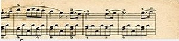
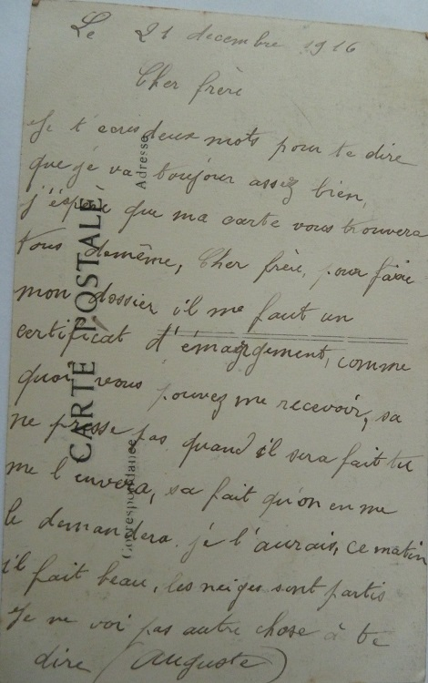

Seconde Blessure
Février 1916 … Auguste et son régiment sont en Alsace. Auguste et ses camarades défendent un bout de terre française comme le font tous les soldats sur la ligne de front qui s’est figée. Tous s’installent dans cette guerre et dans la routine quotidienne des tranchées comme en atteste cette carte à Augustine.
Mais le bruit et la fureur des grandes batailles ne sont jamais loin … Déjà Gabriel a rejoint Verdun et bientôt, l’Etat Major va dresser les plans qui enverront Auguste comme la plupart des soldats français à cette grande bataille de Verdun.
Ma chère Augustine,
Je prends ma plume pour t’écrire deux mots. Je suis toujours en très bonne santé. Depuis que je suis revenu de permission, je me suis toujours très bien porté.
L’hiver n’a encore pas été mauvais , le mois de Janvier a été très bon. Nous avons fait de bonnes marches, mais je m’en suis très bien tiré. Ces jours, on a de la pluie, aujourd’hui il gèle un peu.
Je suis bien habitué avec mon nouveau Capitaine, il est toujours content.
Hier, j’ai reçu une carte de Gabriel, il est de nouveau rentré à sa Compagnie. Il est content de sa permission. Moi, je compte aller te voir dans un mois ou un mois et demi.
Reçois d'Alsace, les meilleurs souhaits de ton parrain.
Auguste
Le régiment d’Auguste est envoyé a Verdun au mois de Mars. Peut-être Auguste sait-il alors que son frère Gabriel est mort au combat et que c’est maintenant son tour de faire face au même danger.
Il est facile d’imaginer les angoisses de la famille aux Raynauds. Ils viennent de perdre un fils et un grand frère, et la guerre menace à présent de leur en prendre un autre. Mais la machine de guerre s’en moque bien, bien huilée et d’une diabolique précision administrative, elle fait preuve d’une redoutable efficacité … comme la Voie Sacrée qui achemine les Poilus sur Verdun !
La Voie Sacrée était la seule route, véritable artère logistique vitale, reliant le front de Verdun à l’arrière, vers Bar-le-Duc. C’est par elle que transitèrent, nuit et jour durant dix mois, près de 2 400 000 hommes et des milliers de tonnes de munitions et de matériels. C'est l'écrivain Maurice Barrès qui lui donna ce nom de Voie Sacrée après une visite à Verdun.
Pour résister face aux assauts allemands, il faut des hommes, des munitions et du ravitaillement. En stratège avisé, Pétain instaure la relève systématique des soldats. Tous les cinq jours environ, les troupes qui viennent de combattre sont remplacées par de nouveaux contingents, censés être moins éprouvés. Cette mesure, qualifiée de « tourniquet », aura pour conséquence de faire passer, à Verdun, la quasi-totalité des régiments de l’armée française.
C’est une véritable noria qui se met ainsi en place. Un camion toutes les quinze secondes. Et ce, de jour comme de nuit.
Hasards de l’Histoire … Il se trouve que parmi les conducteurs de camions sur la Voie Sacrée, il y a un certain Maurice Ravel ! Engagé volontaire à 41 ans, Ravel a troqué son piano pour un camion Berliet et Adélaide, sa camionette Panhard.
On se plait à penser qu’il a peut-être conduit Auguste au front. On sait en tout cas qu’il a passé une semaine avec sa camionette en panne dans le secteur des Bois Bourrus où Gabriel a trouvé la mort quelques semaines plus tôt.
Ravel sera fortement marqué par son expérience de Verdun et quelques années plus tard, il composera le Tombeau de Couperin en hommage à certains de ses camarades soldats. C’est d’ailleurs la musique qui accompagne cette page.
De cette période à Verdun, on ne retrouve aucune carte d’Auguste. Difficile de dire si les cartes se sont perdues ou si Auguste n’écrit pas. Seule une carte d’Antoine fait état d’une correspondance entre les deux frères jumeaux.
Datée du 25 Août 1916, elle est écrite la veille de la seconde blessure d’Auguste et celui-ci la lira sans doute sur son lit d’hôpital …


Cher Frère,
J’ai reçu ta carte du 18. Je suis en bonne santé et désire que tu sois de même.
Je pense que tu auras reçu le colis. Pierre Fradin est rentré au dépôt, il t’envoie le bonjour.
Paul m’a écrit, il ne doit pas être bien loin de toi.
Je vois pas autre chose à te dire.
Je termine en t’embrassant bien fort.
Antoine
Auguste est arrivé le 23 Avril avec son régiment dans le secteur de Watronville, à proximité de Verdun. Le 414ème d’Infanterie est alors engagé dans la défense des abords du Fort de Douaumont et se retrouve au plus fort de la bataille au début du mois d’Août, comme en atteste la comptabilité scrupuleuse du journal de marche du régiment.
Après cette période éprouvante, et en ligne avec la stratégie de Pétain, le régiment est remplacé par des troupes fraîches et renvoyé un temps à l’arrière pour être reconstituer.
Dès la mi-Août, le régiment est affecté au front mais cette fois-ci dans un secteur plus calme en Argonne, à proximité de Sainte Menehould. Le secteur est sans doute plus calme que Verdun, mais il y tombe aussi des obus allemands.
Affecté à une corvée de déchargement de munitions en gare de Vienne La Ville, Auguste est blessé par éclat d’obus à la cuisse gauche, le 26 Août … deux ans jour pour jour après sa première blessure.
Commence alors pour Auguste un périple sanitaire, de son évacuation du front à un hôpital de l’arrière. Curieusement, il se trouve que le futur écrivain Julien Green, trichant sur on âge (il a seulement seize ans), est l’un des conducteurs d’automobiles sanitaires basées à Clermont en Argonne, tout près de Sainte Menehould.
Alors peut-être qu’après Maurice Ravel, c’est Julien Green qui fait faire un tour d’automobile à Auguste !
La logistique d’évacuation des blessés est aussi impressionnante que la logistique d’acheminement des soldats au front, on roule simplement dans l’autre sens : de l’Enfer au Paradis aseptisé des hôpitaux de l’arrière comme décrit dans ce dossier du site Chemins de Mémoire.
Début Octobre … C’est finalement à Chalons sur Marne qu’Auguste est hospitalisé. Comme à Lyon, deux ans plus tôt, l’hôpital est un lycée reconverti pour accueillir les blessés.
Voici sa première carte à Augustine
Ma chère petite filleule,
Je prends ma plume pour t’écrire deux mots. Tu dois te dire que je t’ai oubliée, mais je pense souvent à toi.
J’ai souffert les premiers temps mais maintenant ça va très bien. Je marche tous les jours un peu. Le temps me dure bien moins.
Ton parrain qui t’embrasse bien fort.
Auguste
Suivent des cartes au reste de la famille, dans lesquelles Auguste fait état de l’amélioration de sa santé … toujours soucieux de les rassurer.
Cher frère,
Je t’écris deux mots pour te dire que ça va assez bien.
Le plâtre me fait toujours un peu mal mais je n’en ai plus que pour 9 jours.
Je ne vois pas autre chose à te dire.
Ce matin il pleut.
Auguste
Ma chère petite Léa,
Deux mots pour te dire que je vas toujours bien.
Je serai qu’évacué la semaine prochaine.
Marie m’a écrit que tu travailles toujours bien.
Tu embrasseras le tonton et la tante pour moi.
Je voudrais bien être avec vous pour vous aider.
Ton frère. Auguste
Cette fois-ci, la blessure est plus sérieuse et tout laisse à penser qu’elle sera sans doute suffisante pour éviter un retour rapide au front. La famille est sans doute soulagée …
Chère sœur,
J’ai reçu ton aimable lettre avec le petit journal bleu avec plaisir. J’aime bien lire tes grandes lettres.
Vous avez tous beaucoup travaillé pour les semailles.
Chère sœur, il me semble que tu portes peine de moi. Il ne faut pas porter peine. Vois, les premiers temps j’ai un peu souffert mais je me suis pas fait de mauvais sang. Mais depuis que je n’ai plus d’appareil, je ne souffre plus.
Je suis très bien. Je t’assure que je suis plus heureux qu’au front. Ma jambe va très bien. J’aurai un peu de raccourcissement. Plus que je croyais. Ça me vaudra peut -être de passer dans l’auxiliaire et ma jambe sera aussi solide qu’avant.
Je me porte bien depuis quelques jours. J’ai ramassé de bonnes joues. Maintenant ça va bien.
Auguste
Chère sœur,
J’ai reçu ta lettre du 6 hier soir et aussi le paquet.
Rien n’était abîmé. Tu prends beaucoup de peine pour moi. J’en avais pas besoin, mais j’en mangerai de temps en temps. Le fondant est très bon.
La semaine dernière, j’ai fait apporter des marrons, ils étaient très bons. Tu sais, à l’hôpital, on a toutes les envies … Tu me diras si vous en avez.
Chère sœur, ça va très bien. Je vas me lever dans 5 ou 6 jours. Le temps me dure pas quand je souffre pas, Ça va bien.
Je vois que Justin est pas loin de chez lui. Je ne sais pas quand je serai évacué. Encore quelques jours et je serai mieux guéri.
Ton frère. Auguste
Début Décembre … Le séjour d’Auguste en hôpital semble plus long que prévu et le temps lui dure de partir en convalescence.
Cher frère,
Je t’envoie une carte pour te dire que ça va toujours très bien.
Je marche de mieux en mieux. Ces jours, il fait très beau. Tous les jours, il y a promenade. J’ai sorti trois fois. Hier, j’ai visité le cimetière militaire. C’est assez bien, ça fait passer le temps.
Je compte que je vas partir cette semaine.
Je ne pensais pas rester aussi longtemps à Chalons. Il n’y a pas beaucoup de blessés, c’est pour ça qu’on nous garde plus longtemps que d’habitude.
Ton frère. Auguste
Cher cousin,
Je réponds à ta carte du 3.
Je suis été tout heureux de te savoir en bonne santé et que tu avais réussi à ta commission.
Pour moi, je vois qu’il n’y a guère à faire maintenant. Je crois que je vais bientôt retourner voir le camp d’instruction une autre fois. Mais enfin, je ne m’en fais pas à présent, le cafard a passé.
Ici, rien de nouveau, sauf le froid.
Reçois de ton cousin ses meilleures amitiés.
Félicien
Cette fois-ci, c’est fait … Auguste a finalement quitté l’hôpital et on le retrouve fin Décembre dans le département de la Creuse où il a commencé sa convalescence.

Cher frère,
Je t’écris deux mots pour te dire que je vas toujours assez bien. J’espère que ma carte vous trouvera tous de même.
Cher frère, pour faire mon dossier, il me faut un certificat d’émargement comme quoi vous pouvez me recevoir. Ça ne presse pas. Quand il sera fait, tu me l’enverras. Ça fait que quand on me le demandera, je l’aurai.
Ce matin, il fait beau, les neiges sont parties.
Je ne vois pas autre chose à te dire.
Auguste
C’est la saison des vœux, et une nouvelle fois, chacun espère que l’année passée sera la dernière année de guerre.
Ma chère Maria,
Quoique ces tristes années l’on ne songe pas aux souhaits, permets moi de te dire que je ne t’oublie pas et que mes vœux les meilleurs sont formés pour ton bonheur.
L. Lanetière

Mille vœux et souhaits de bonheur pour 1917.
Affectueux bonjour de nous tous.
Marie
Des Sillons aux Tranchées